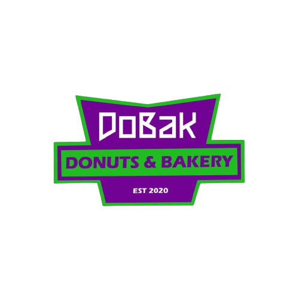

OUR HISTORY
DoBak Donuts & Bakery offers a wide selection of a unique premium donuts, with a range variety of baked goods such as cakes, cookies and bread. Its exceptional donut qualities come from a unique premix formula variety of ingredients and flavours for donuts. Donuts that we sell, we only use natural and fresh ingredients to make a fresh donut. We also use Halal ingredients for our donuts and baked. DoBak Donuts & Bakery produce of a freshness and fluffy soft texture for donuts to add more taste of our donuts. We also offer unique recipe of donuts and also our baked such as cakes, cookies and bread for our customers.
1 / 3
2 / 3
3 / 3